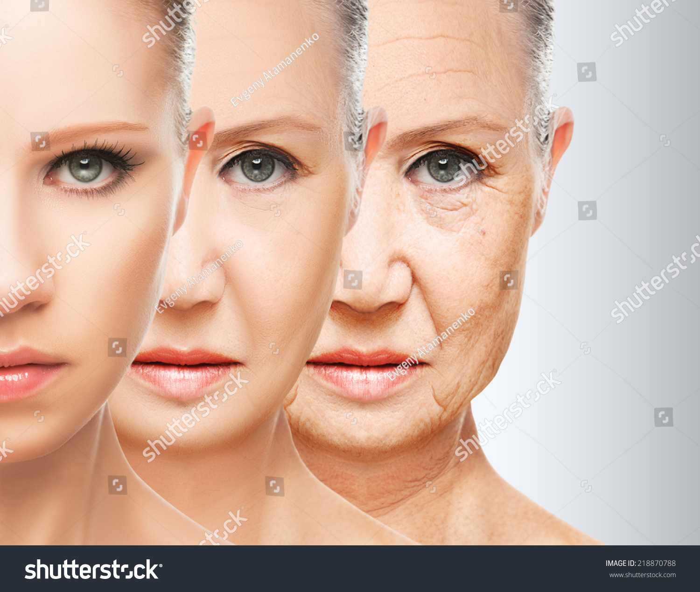
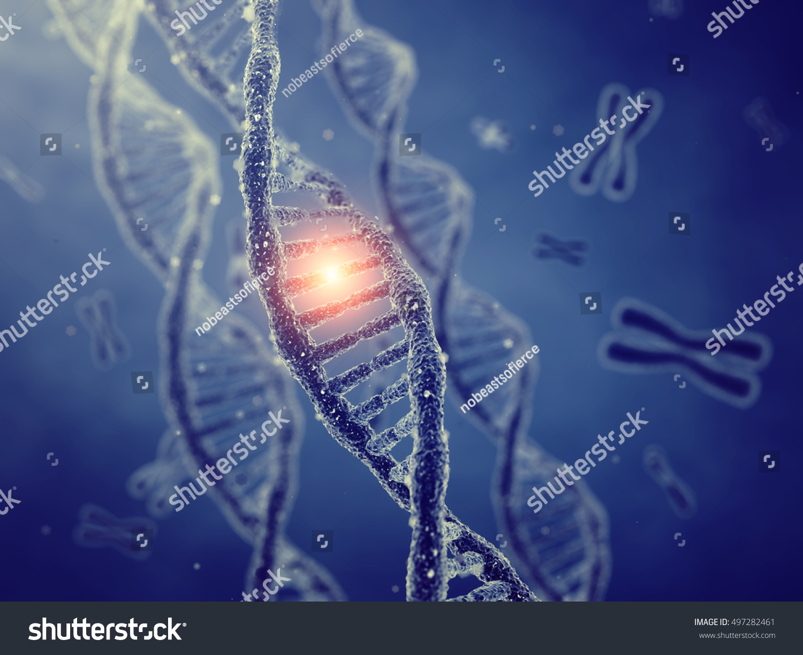
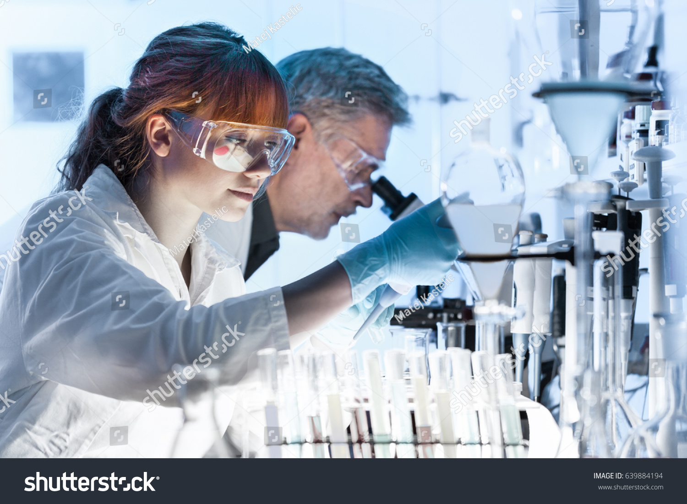
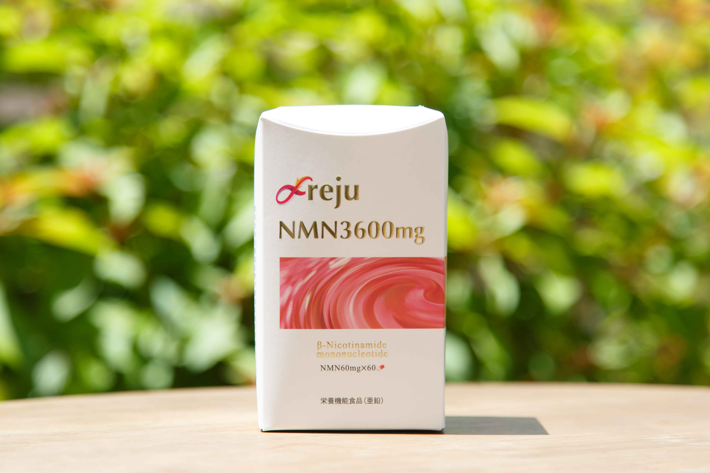
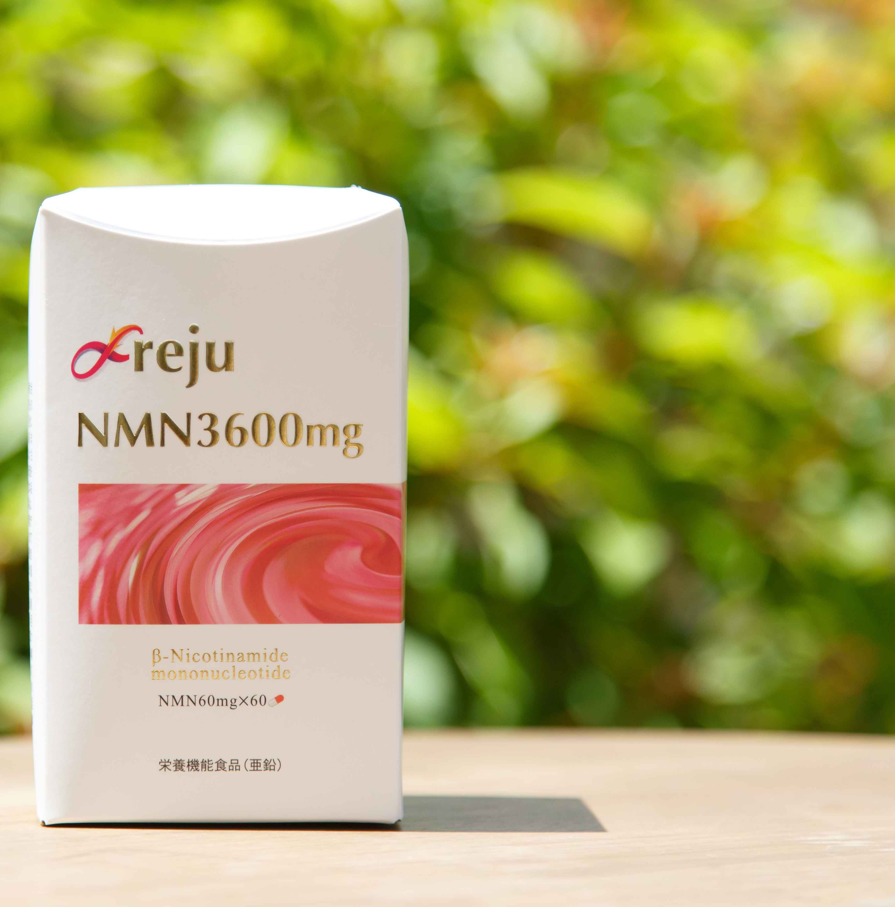

老化に伴う病気や衰えについて不安はありませんか？

最後まで笑顔で元気に

NMNについて

レジュNMN商品3600mg


最後に
ＮＭＮに関して、ここでは紹介できないほどの様々な論文や記事がインターネットにあげられております。 ぜひこの機会にＮＭＮに関心を持っていただき、ご自身でＮＭＮの効能効果、他社製品の情報等を集めてください。 弊社は今後ともより良いＮＭＮ製品を開発して行きます。更なるＮＭＮ高含有、低価格化を実現して行きます。
会社概要
| 商号： | ステアフーズ株式会社 suteafoods.fsi-web.com/ |
|---|---|
| 代表： | 我喜屋 聡 |
| 設立： | 平成22年6月 |
| 事業内容： | 食品加工業/各種健康食品の原料卸 |
| 事業内容： | 野草・薬草類の粉末・殺菌加工/各種健康食品の企画・製造 |
| 主力商品： | フロージュNMN600mg、レジュNMN3600mg、フコイダン希望、イミュ霊芝・フコイダン |